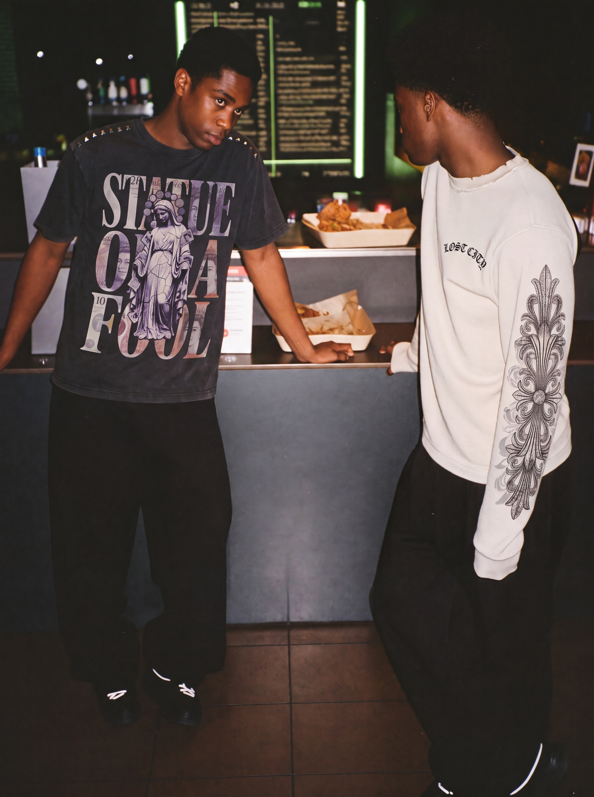
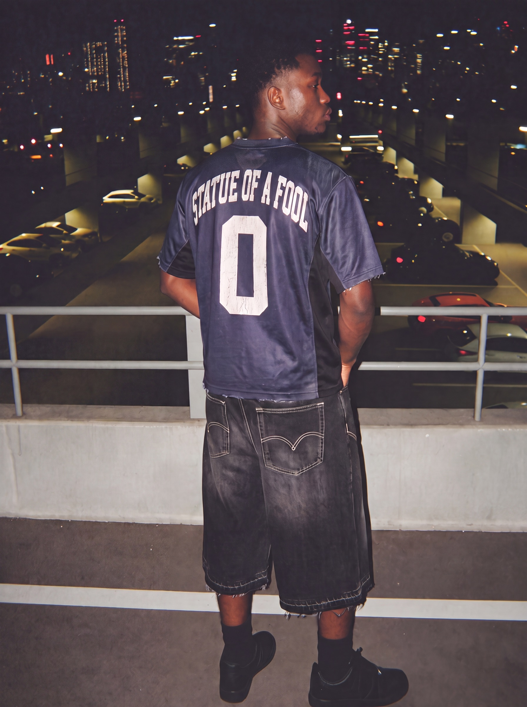

Portfolio
Selected work.
Six projects, one production language. Brand campaigns, films, identity and print, built start to finish in house.
● Concept work · self-initiated, not commissioned
↓ Six projects below

01 / The index
Six projects.
Everything above is concept work, self-initiated and finished to the standard a commissioned campaign would need. It is the most honest way to show taste and range: the thinking and the execution are both on the table before a brief ever lands.
● Rory · Founder
Everything above, counted
Nothing commissioned.
6
Projects
83
Stills published
20
Films published
1
Founder
Count them. Every figure is what is actually on this site, made in-house, direction through to delivery. No borrowed logos and no numbers you cannot check yourself.
02 / The frames
Across all six projects






Seven of 103. The rest sit inside the projects above.
03 / Work with us